Grundwissen/ Sachen über ein Pferd

Putzzeug
Striegel:
Entfernt groben Schmutz, Staub und lose Haare aus dem Fell. Wird in kreisenden Bewegungen verwendet.

Kardätsche:
Eine weiche Bürste zum Entfernen von feinem Staub und für Glanz im Fell.

Wurzelbürste:
Eine harte Bürste für starke Verschmutzungen, besonders an den Beinen.

Hufkratzer:
Reinigt die Hufe und entfernt Steine, Schmutz und Mist.

Mähnen- und Schweifbürste:
Entwirrt Mähne und Schweif und hält sie gepflegt.

Bahnfiguren

Pferde im Sport
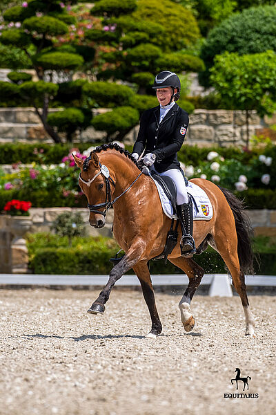
Dressur:
Bei der Dressur führen Pferd und Reiter verschiedene Übungen auf einem Viereck aus. Ziel ist es, dass das Pferd die Hilfen des Reiters genau versteht und elegante Bewegungen zeigt. Bewertet werden unter anderem Haltung, Genauigkeit und Harmonie zwischen Pferd und Reiter.
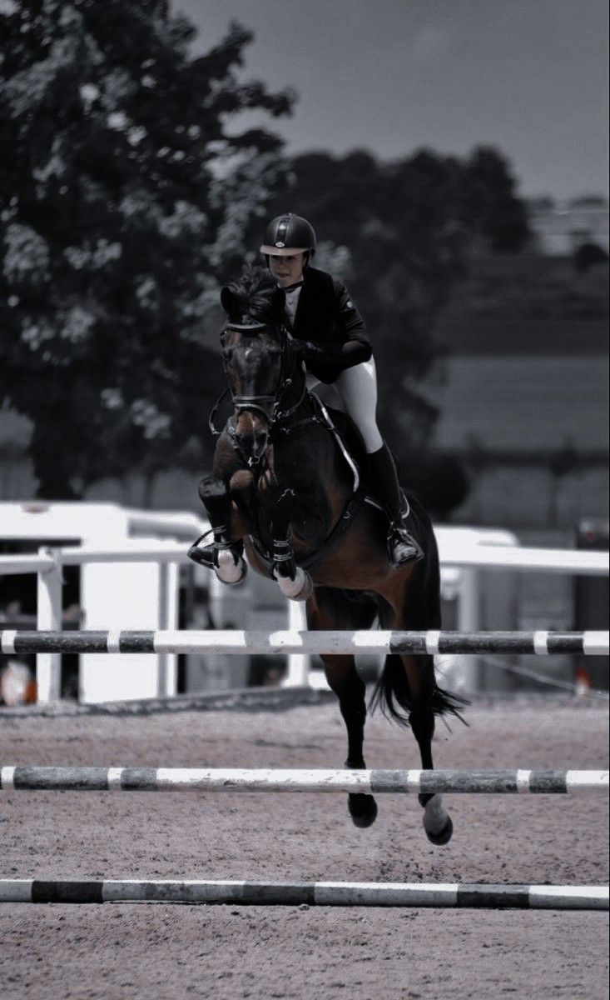
Springreiten:
Beim Springreiten müssen Pferd und Reiter einen Parcours mit Hindernissen überwinden. Dazu gehören verschiedene Sprünge wie Steilsprünge oder Oxer. Gewonnen hat meist das Paar mit den wenigsten Fehlerpunkten und der schnellsten Zeit.
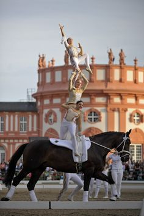
Voltigieren:
Voltigieren ist Turnen auf dem Pferd. Die Sportler führen Übungen und Akrobatik auf einem Pferd aus, das an einer langen Leine im Kreis läuft. Dieser Sport fördert Gleichgewicht, Körperbeherrschung und Teamarbeit.
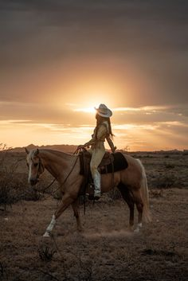
Westernreiten:
Westernreiten stammt ursprünglich von den Cowboys in Nordamerika. Die Reiter nutzen spezielle Sättel und reiten oft mit lockeren Zügeln. Bekannte Disziplinen sind Reining, Trail und Barrel Racing.
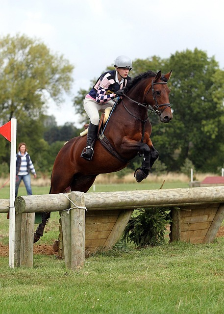
Vielseitigkeitsreiten:
Diese Disziplin wird oft als „Triathlon des Reitsports" bezeichnet. Sie besteht aus drei Teilen: Dressur, Geländeritt mit Hindernissen, Springreiten. Hier werden Geschicklichkeit, Ausdauer und Mut von Pferd und Reiter geprüft.
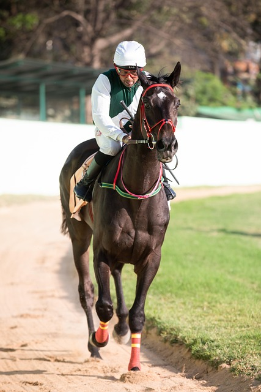
Pferderennen:
Bei Pferderennen treten Pferde gegeneinander an und versuchen, eine festgelegte Strecke möglichst schnell zu laufen. Es gibt Galopp- und Trabrennen.
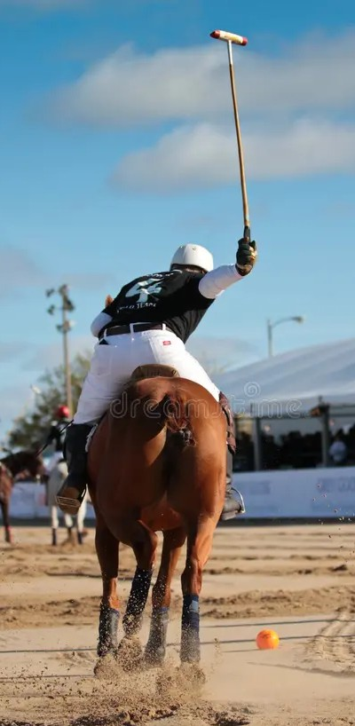
Polo:
Polo ist ein Mannschaftssport zu Pferd. Die Spieler versuchen mit einem Schläger einen Ball in das Tor der gegnerischen Mannschaft zu schlagen. Es gilt als eine der ältesten Pferdesportarten der Welt.
Haltungsformen
-
Boxenhaltung
- Das Pferd steht die meiste Zeit in einer Einzelbox.
-
Vorteile:
Kontrolle über Futteraufnahme
Weniger Verletzungsrisiko durch andere Pferde
Gut für kranke Pferde oder Hengste
-
Nachteile
Wenig Bewegung
Wenig Sozialkontakt
Kann zu Verhaltensproblemen führen (Weben, Koppen)
-
Geeignet für:
Sportpferde mit viel täglichem Training
Pferde mit speziellen Bedürfnissen
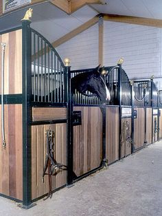
-
Paddockbox
- Die Box hat einen direkt angeschlossenen Auslauf.
-
Vorteile:
Mehr Bewegung als reine Boxenhaltung
Frische Luft rund um die Uhr
Pferd kann selbst entscheiden, ob es drinnen oder draußen steht
-
Nachteile:
Weniger Sozialkontakt als in einer Herde
Höhere Kosten
-
Geeignet für:
Fast alle Pferde
Sport- und Freizeitpferde
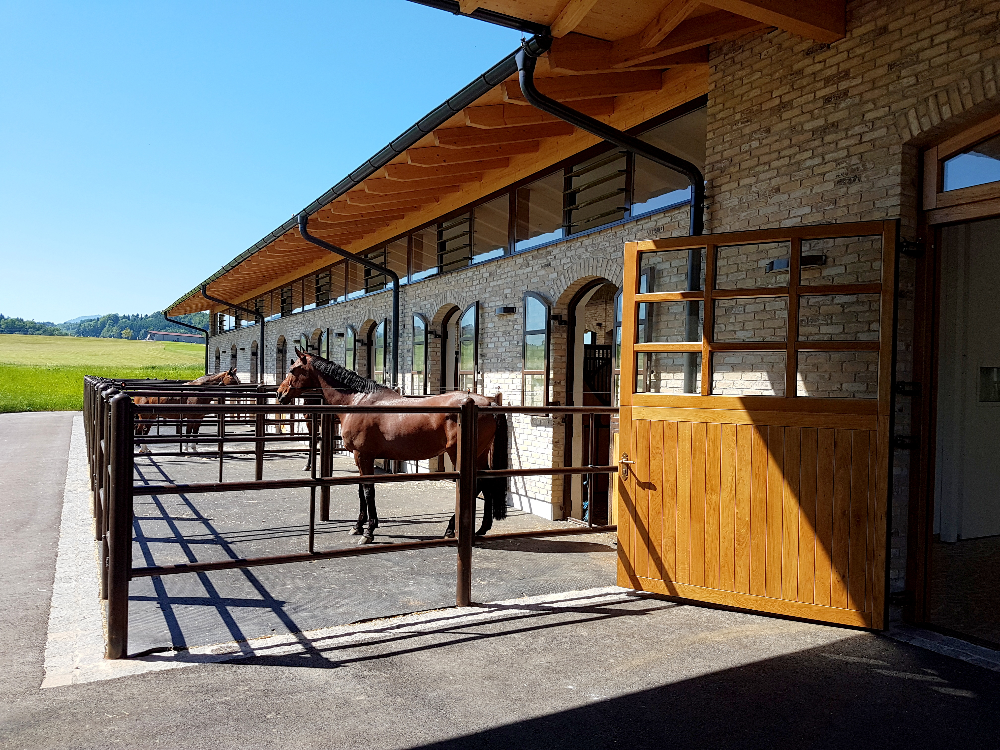
-
Offenstall
- Die Pferde leben in einer Gruppe und haben ständig Zugang zu einem Unterstand.
-
Vorteile
Viel Bewegung
Ständiger Sozialkontakt
Sehr pferdegerecht
Gut für Muskeln und Gelenke
-
Nachteile:
Rangordnungskämpfe möglich
Nicht jedes Pferd kommt mit jeder Herde klar
Fütterung muss gut organisiert sein
-
Geeignet für:
Die meisten Freizeit- und Robustpferde
Viele Sportpferde
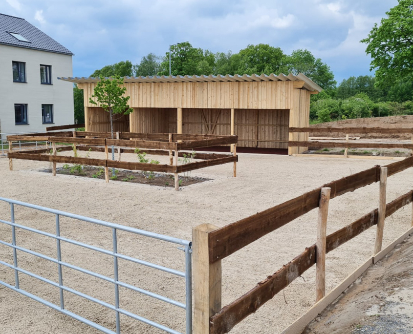
-
Aktivstall
- Eine moderne Form des Offenstalls. Die Pferde müssen zwischen Futter-, Wasser- und Ruhebereichen laufen.
-
Vorteile
Sehr viel Bewegung
Natürliche Lebensweise
Oft computergesteuerte Fütterung
-
Nachteile
Teuer
Nicht für jedes Pferd geeignet
Eingewöhnung kann dauern
-
Geeignet für:
Gesunde Pferde jeden Alters
Pferde, die viel Bewegung brauchen
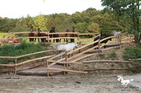
-
Laufstall
- Mehrere Pferde leben gemeinsam in einem größeren Stallbereich.
-
Vorteile
Sozialkontakt
Mehr Bewegung als in der Box
-
Nachteile
Weniger Platz als im Offenstall
Rangordnungsprobleme möglich
-
Geeignet für:
Freizeitpferde
Jungpferde
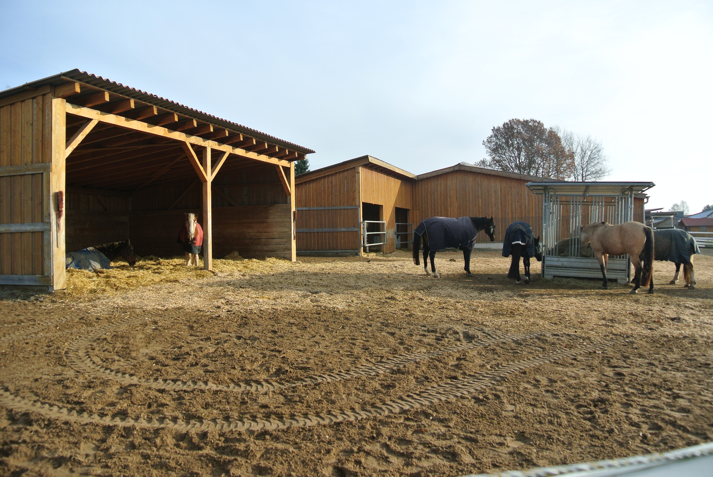
-
Weidehaltung
- Pferde leben überwiegend oder ganzjährig auf einer Weide.
-
Vorteile
Sehr natürliche Haltung
Viel Bewegung
Dauerhafter Sozialkontakt
-
Nachteile
Gute Unterstände nötig ZIm Winter aufwendiger Nicht jedes Sportpferd bleibt im Training ausreichend bemuskelt
-
Geeignet für:
Robustpferde Rentner Jungpferde
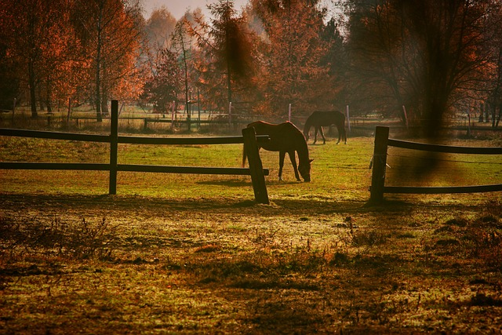
-
Herdenhaltung
- Ganzjährige Außenhaltung mit Unterstand und Herde.
-
Vorteile
Sehr naturnah Geringe Stallkosten Stärkt Gesundheit und Stoffwechsel
-
Nachteile
Nicht jede Rasse ist dafür geeignet Mehr Fellpflege im Winter Gute Flächen und Schutzmöglichkeiten notwendig
-
Geeignet für:
Islandpferde Fjordpferde Haflinger Viele Ponyrassen
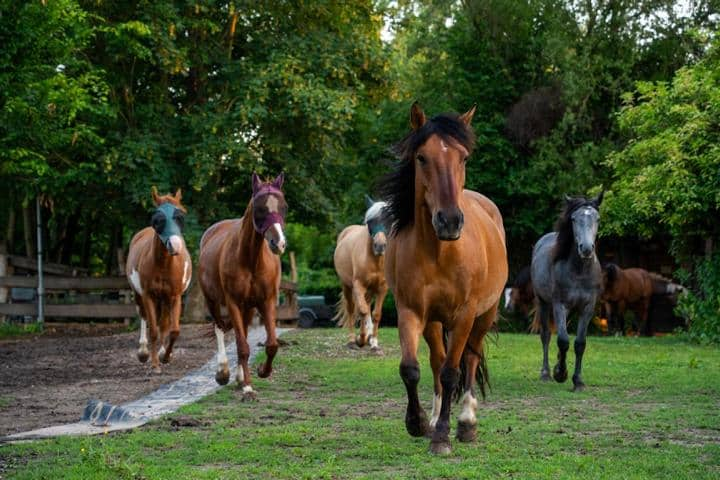
-
Hengsthaltung
- Spezielle Haltung für Hengste, oft in Einzelboxen oder sorgfältig zusammengestellten Gruppen.
-
Vorteile
Sicherer Umgang Vermeidung ungeplanter Bedeckungen
-
Nachteile
Aufwendig Weniger Sozialkontakt möglich
-
Geeignet für:
Hengste
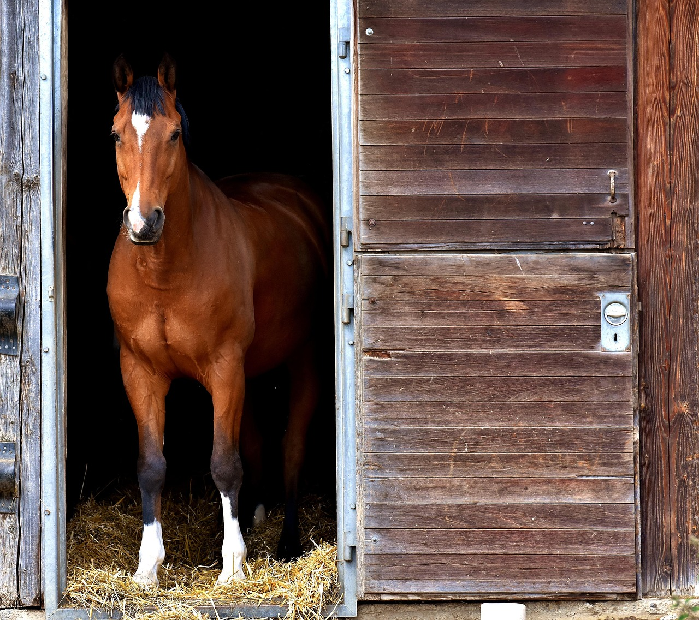
Was man für ein Pferd braucht + Preise
| Pferd | 5.000 € bis ... | einmal |
| Sattel | 150 bis 10.000 € | einmal oder für jede Disziplin |
| Schabracken | 50 bis über 300 € | So viele wie man will |
| Sattelgurt | 20 bis über 2000 € | Kommt auf die dicke des Pferdes an |
| Steigbügel und Riemen pro Sattel | 50 bis über 200 € | einmal pro Sattel |
| Trense | 30 bis über 600 € | So viele wie man will |
| Gebiss | 20 bis über 200 € | pro Trense |
| Putzsachen | 20 bis 60 € | einzelne sachen immer wieder erneuern |
| Halfter | 10 bis über 300 € | So viele wie man will |
| Regendecke, Winterdecke, Abschwitzdeck | 40 bis über 300 € | mehrere in verschiedene Stärken |
| Stallmiete | 150 bis über 1.000 € | pro Monat |
| Reitunterricht | 25 bis 150 € | So oft man will |
| Hufschmied | 30 bis 300 € | alle 6 bis 8 Wochen |
| Tierartzt | 20 bis ... € | nur wen es krank ist |
| Impfung | 30 bis 250 € | einmal bis zweimal jährlich |
| Pferdehaftpflichtversicherung | 80 bis 250 € | pro Jahr |
| Reithelm | 50 bis ... € | 3 bis 5 Jahre, bei Sturz auf Kopf |
| Reitstiefel oder Stiefeletten | 50 bis 400 € | bis kaputt oder zu klein |
| Reithanschuhe | 10 bis 50 € | bis kaputt oder zu klein |
| Sicherheitsweste | 50 bis über 300 € | bis zu klein ist oder bei Sturz |
| ein Reitoutfit | 170 bis über 1.500 € | mehrere |